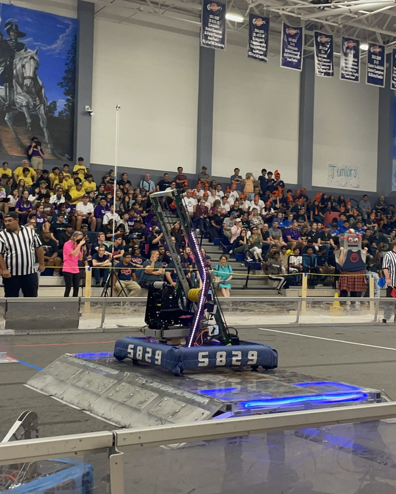
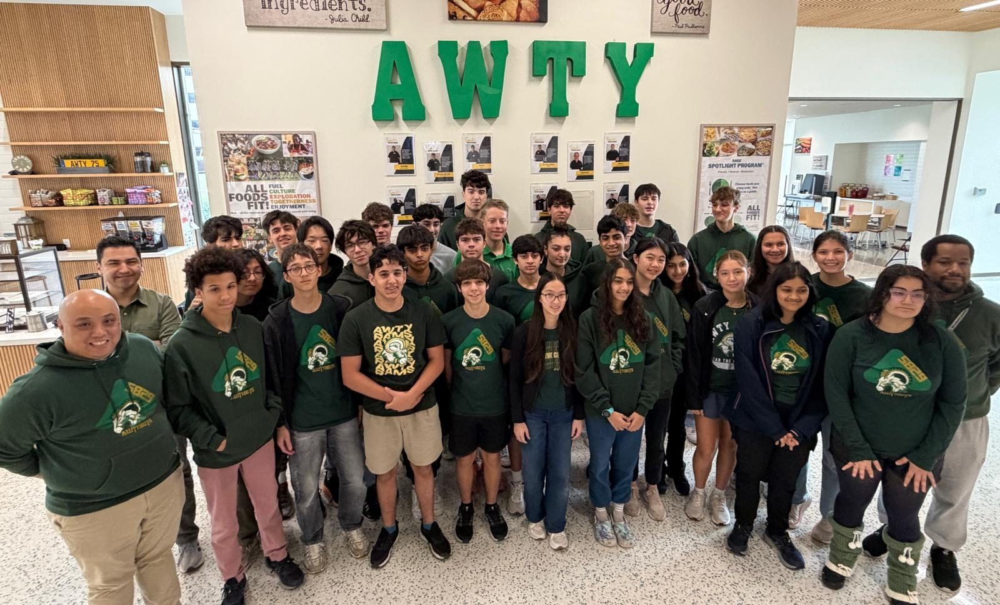
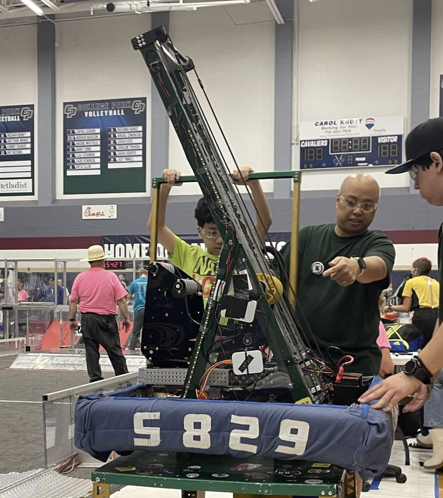
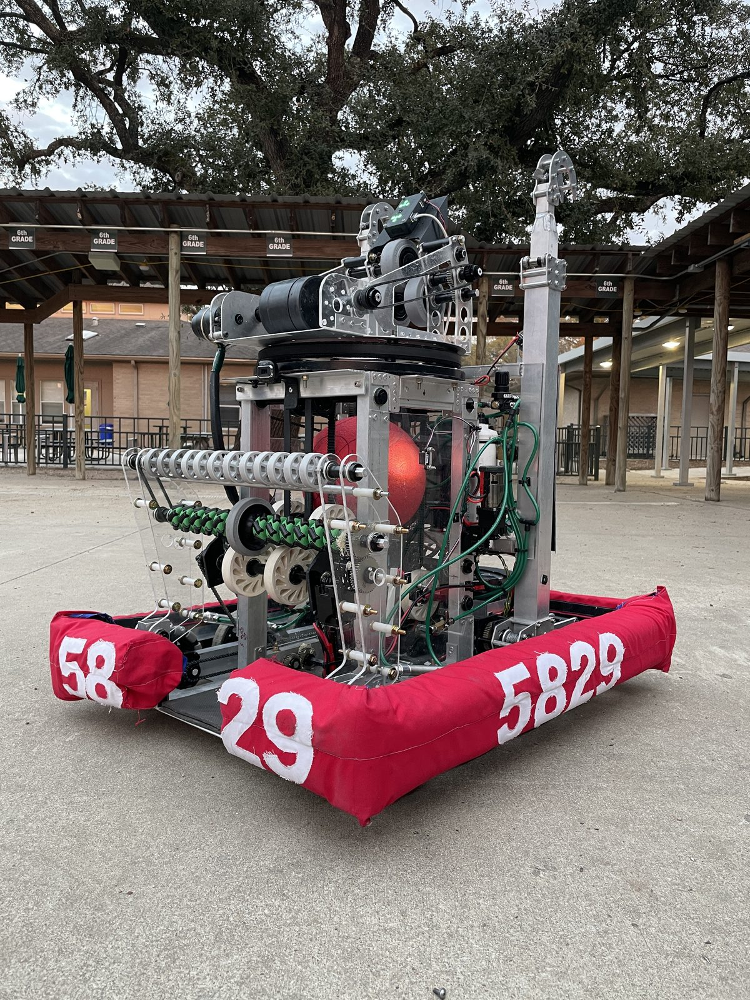
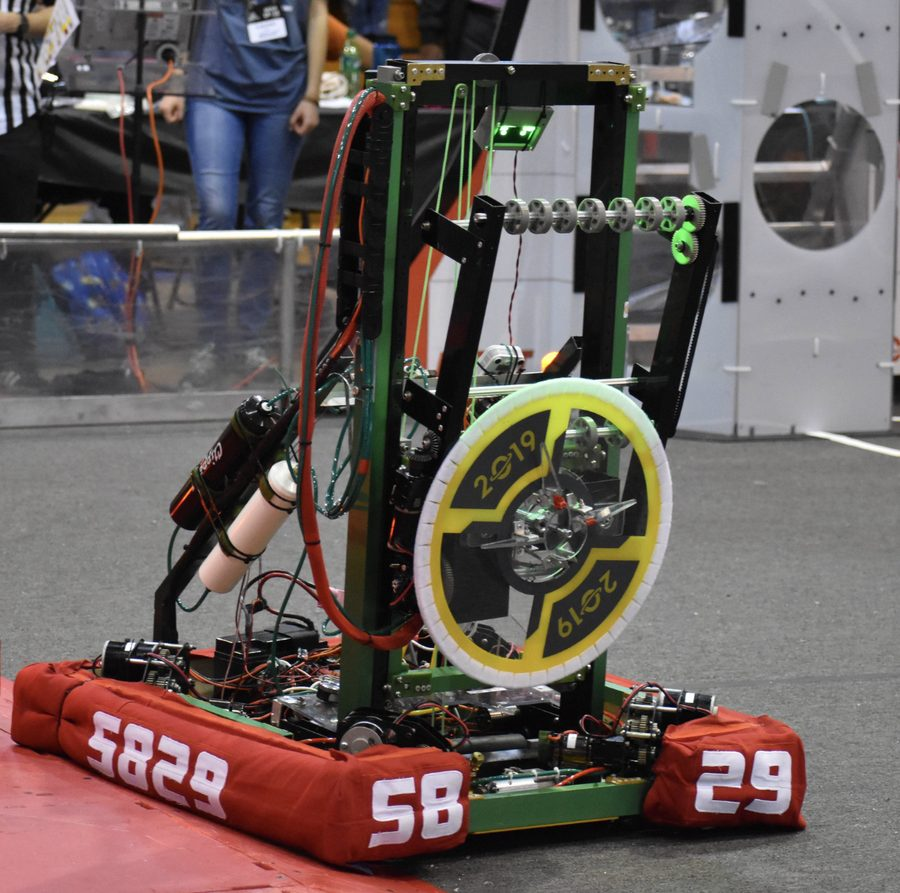
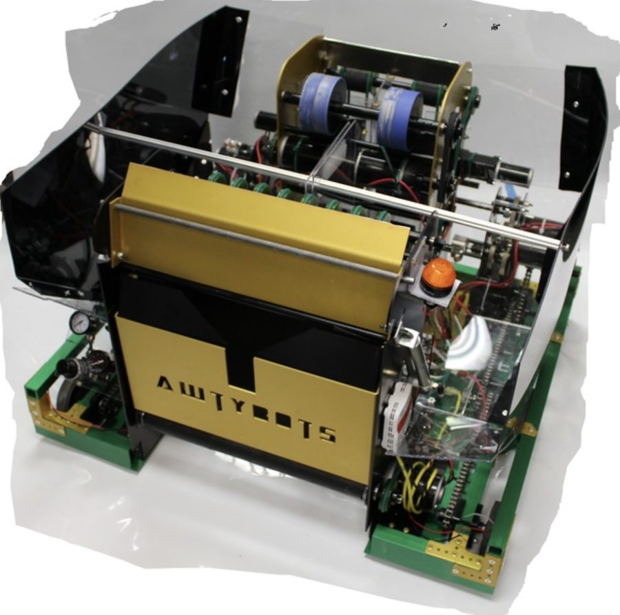

2026Rebuilt
2026Rebuilt
Goldfire
McAllen · Space City · State · FIRST Championship
FRC Team 5829 — Awty International School
We're the FIRST Robotics Competition team at the Awty International School in Houston — 40 students who design, build, and program a new 120-pound robot every year, and bring robotics to our community along the way.

5829 · ON THE FIELD
10 Year AnniversaryFrom the Rams
Team 5829 started in 2015, when Awty's VEX team and a group of mentors decided to go bigger. We rookied in FRC the next season and haven't stopped since. 2026 marks our 10th year — a decade of robots, road trips across Texas, and students learning to build things that hold up under pressure.
Today we're around 40 students across grades 9–12, competing in the FIRST in Texas district. We've reached the FIRST Championship three times, most recently in the 2026 Archimedes Division — and we put just as much into outreach as we do into our robot.








The Fleet
Ten robots, ten games. Here are the most recent — see the full history back to 2016.
2026Rebuilt
McAllen · Space City · State · FIRST Championship
Belton · Victoria · State Championships
Katy · San Antonio · State Championships
Channelview · San Antonio · State
Channelview · Pasadena · State
Signature // Software
Our autonomous routines run on WPILib and PathPlanner, with AdvantageKit logging every match — so we can see exactly what the robot did before a driver ever touches the controller.
2026 Season
Four events, three judged awards, and a return to the FIRST Championship in our home city.
Next Up
June 25–27, 2026 · Strake Jesuit College Prep · Houston, TX
Beyond the Robot
Outreach isn't a side project for us — it's part of how we compete and who we are.
We translate FRC's technical documentation into other languages, so any student — anywhere — can get into robotics no matter what they speak.
View Project TranslateA simple, build-it-yourself system for keeping timing belts sorted in the lab — with instructions any other team can copy and use.
View the buildOne Team, Many Flags
The Awty International School brings together students from across the world — and our team carries that with us, on the field and in the pit.
Get Involved
Whether you're an Awty student ready to join, a sponsor who wants to power the next robot, or a team looking to collaborate — we'd love to hear from you.